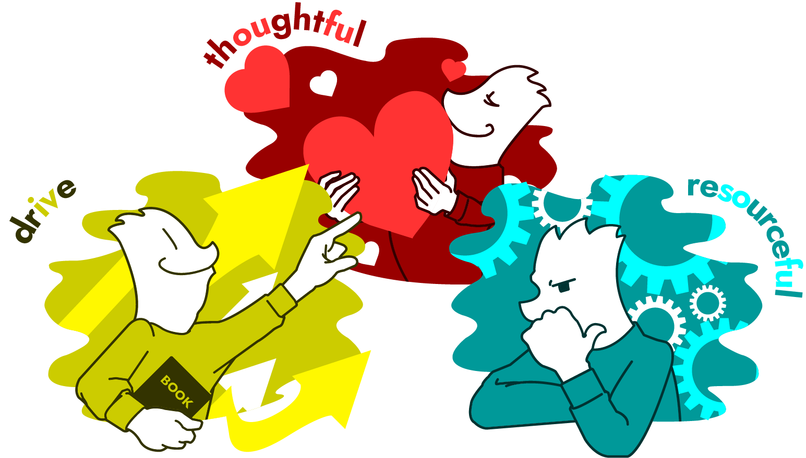
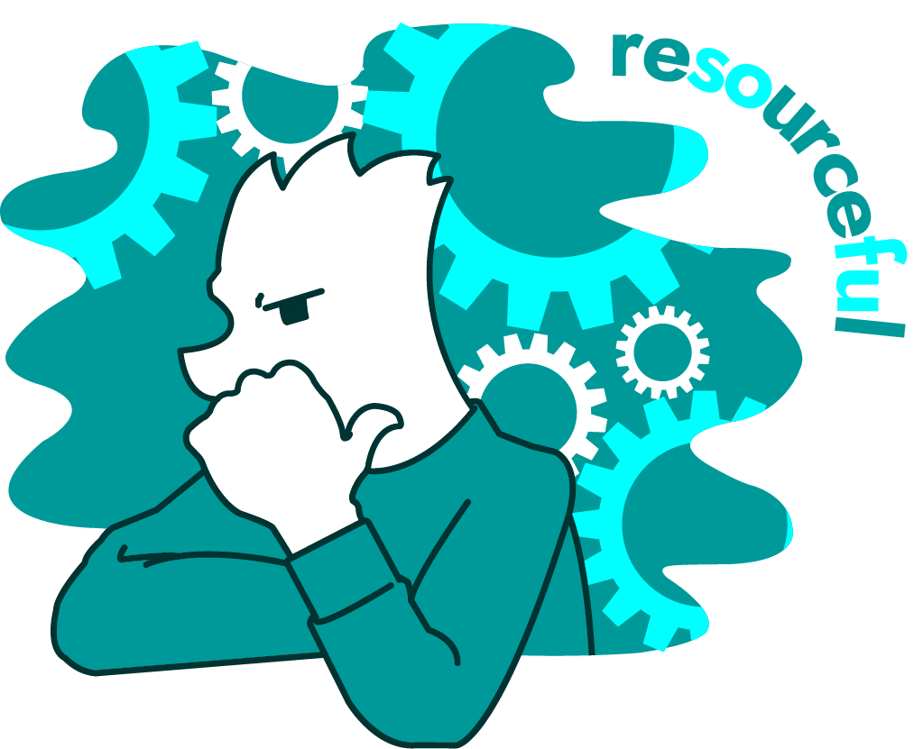

- 制作日付：

- 概要
- 私のポートフォリオサイトに使用するイラストを描きました。設置場所は三つの強みのセクション。強みである思いやり・問題解決力・向上心を具体的にイメージできるように視覚化しました。それぞれの要素からイメージを膨らませるために参考を探し、キャラクターの表情・構図・色み・アイテムなどの各要素を作りました。全体的に言葉の持つイメージと近くなるように意識しています。
- 目的
-
ABOUTページに載せた自身の強みを具現化して、サイト訪問者が文章の内容と合わせてイメージしやすくするため。
サイト全体が堅い雰囲気なので、イラストを配置し親しみやすさを持ってもらうため。 - 制作期間
- イラスト：2週間
- 使用ツール
-
- Illustrator
-
01 思いやり（thoughtful） イラスト
- 思いやりとその類義語をキーワードにイラストを描きました。表情は笑顔で、自分の真心を相手に差し出しているイメージに仕上げています。配色もキーワードから少し深みのある赤色をベースにした同一色相配色にしました。イラストだけでも意味が伝わるように、他人のために気を配り援助するという意味を持つthoughtfulを外側に添えて情報量を整えました。
-
02 問題解決力（resourceful） イラスト
- 
- 問題解決力を、困難に対して素早く適した方法を見つける能力と解釈してイラストを描きました。表情は思慮深く、背景ではその思考回路をイメージしたものに仕上げています。配色は01のイラストの反復で、冷静で知的だけど落ち込んでいるイメージを持たせない青緑をベースにしました。最後にキーワードと同義の英語を添え、01と同じ情報量にしています。
-
03 向上心（drive） イラスト
- 向上心とは常によくしていこうと行動できることと解釈してイラストを制作しました。明るく軽快な印象にするために未来をイメージした左向きで、自分の成長を矢印で表現しました。配色は二つのイラストと被らず、キーワードをイメージできる鮮やかな黄色に。イラストに添える英語はやる気や真面目さを感じさせ、推進力のニュアンスがあるdriveにしました。